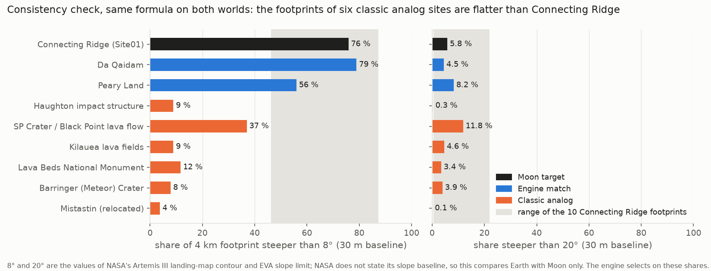
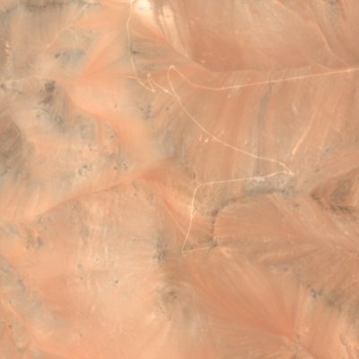
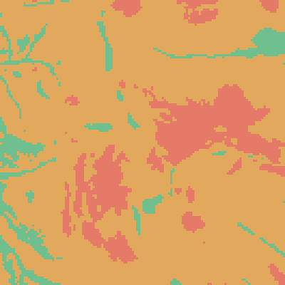
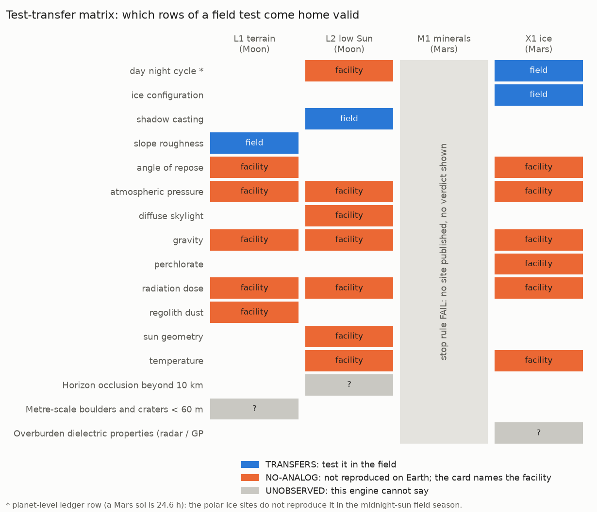

NASA Space Apps Challenge 2026 · Moon Base and Mars analog sites
SIMILITUDE helps Artemis test engineers pick an Earth field site the way a wind-tunnel engineer checks a model: not “does it look like the Moon?” but does the terrain match, can NASA go there, and which test results transfer.
of the Moon Base ridge (Connecting Ridge) is steeper than 8°
median at six famous analog field sites, same formula
verdicts unchanged with a second NASA elevation model
Challenge: Identify Earth Locations that Analog the Permanent Moon Base Locations and Mars
NASA Space Apps Challenge 2026, Ho Chi Minh City
1 · The problem
of the Connecting Ridge footprint (Artemis south pole) is steeper than 8°
median across the footprints of 6 classic analog field sites — none within the ridge's range
Haughton Crater has 130 analog papers, yet its footprint sits in the flat group of the chart. Fame is not fidelity for this test.

Same formula and 30 m baseline on both worlds; 8° and 20° are the values in NASA's Artemis III landing and EVA slope requirements (NTRS 20250009323). This compares Earth with the Moon, not with NASA's landing maps.
2 · How it works
LRO LOLA south-pole DEMs (PGDA 78)
MRO CRISM spectra · SWIM ice maps
Descriptors at a common baseline
Distance to the target, tested against a random null sample of Earth cells
Moon · slopes and roughness
Moon · long shadows
Mars · failed its own stop rule: no site published
Mars · semi-quantitative
it passes the lens gates (bare ground, NDVI ≤ 0.15), lies within 2σ of the target and at or above the 90th percentile of the random null sample. Moon terrain verdicts must also hold in all three test configurations. Controls and decoys are scored the same way.
3 · Evidence
largest difference between our slope code and NASA's PGDA 78 slope rasters, six south-pole sites
of 1,000 random bare-land cells pass for the ridge vs the steep Shackleton wall (exact McNemar p = 0.0078)
terrain verdicts unchanged when recomputed from a second, independent DEM (NASADEM / ArcticDEM)
footprints in the 12 km blocks around six classic analog sites pass the ridge test
Shackleton-wall footprints match their own reference (13 / 45 for other sites): it finds a terrain class, not a named place
polar-desert controls pass, wet-permafrost decoys rejected; our own Pamir–Changtang guess: 0 / 6
Mineral test: 3 of 4 pre-registered checks pass, but the Lake Salda pair reaches only 0.052 km² (rule: 0.1 km²). The rule says fail, so we publish no mineral analog.
4 · What the data found
Leads, not verdicts: same rule, found after the published results, not yet visited. Closed: China (incl. Aksai Chin), Russia, sanctioned states.


Chile · -26.937, -70.248 · 4 km footprint · inside a known analog area. Left: Sentinel-2 true colour. Right: slope classes from the same 30 m DEM — ■ under 8°, ■ 8–20°, ■ over 20°.
5 · Limits we state ourselves
Sun below 7° for a share of daylight
best Earth site
lunar south-pole target
No Earth site can test polar Sun geometry. We report it as a number.
6 · What a test team gets

Data: NASA LRO LOLA / PGDA 78, MRO CRISM (MICA), NASA EMIT (123 footprints), SWIM, MODIS, ASTER GED, NASADEM; Copernicus DEM (515 chips), ESA WorldCover, Sentinel-2, ERA5-Land, TerraClimate, ArcticDEM, OpenAlex. SI use: code, analysis checks and slide text were drafted with SI assistants (Anthropic Claude, Google Gemini) under team review; every number is read from the pipeline tables.